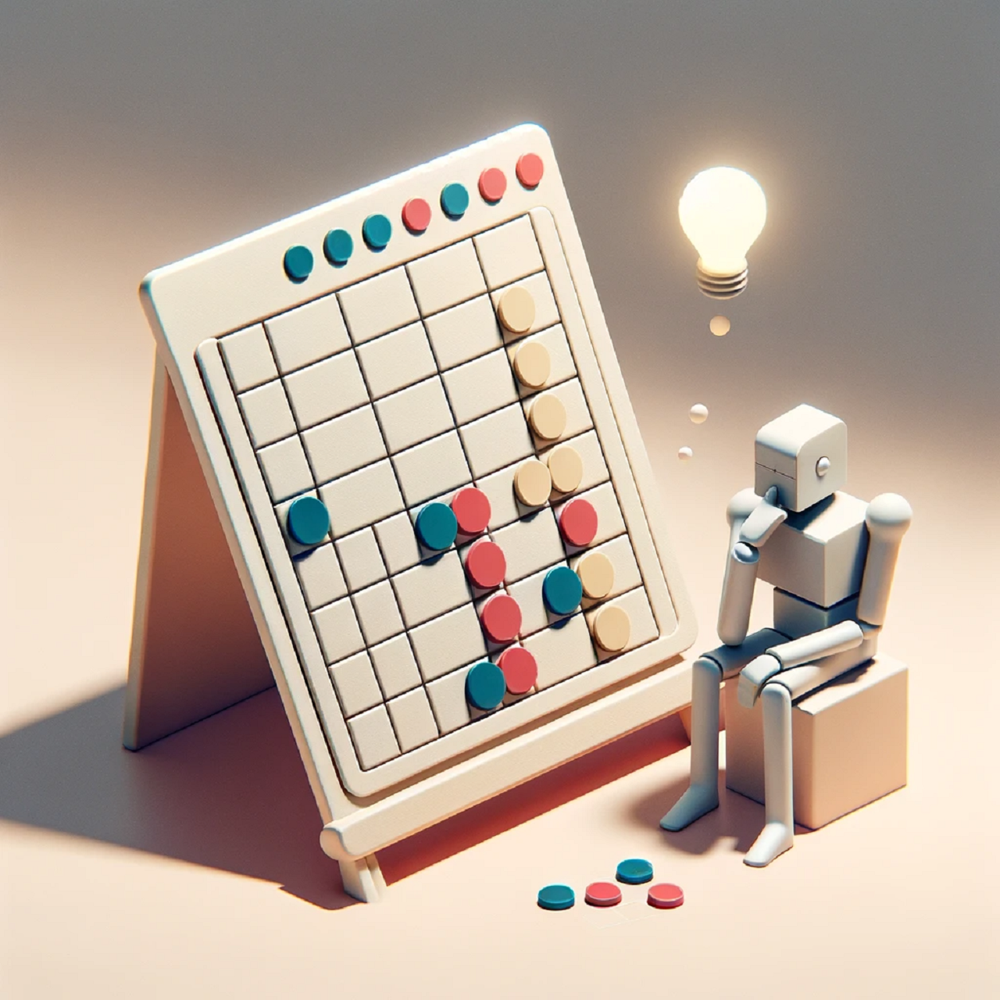

CS50AI by Havard University (soon available)
Currently working on the final project for Harvard's CS50AI , where I am bringing an exciting concept to life:

My goal is to develop a web application enabling users to play the board game "Four-Wins" against a reinforcement learning AI. The game
mechanics are encapsulated in a Python class and stored within a SQLite database. Each game played by users against the AI enriches this
database, contributing to the AI's learning and performance improvement. The unique aspect of this project is its deployment in a production
environment, where the AI undergoes regular retraining intervals.
A central feature of the app is a leaderboard that tracks and displays the win/loss/draw ratio for all users as well as the AI. Initially, the AI
is expected to perform less effectively than human players. However, as it evolves with each new version, the goal is for the AI to reach a
point where it consistently achieves draws in each game. This project is a practical test of the theory that an AI can learn and adapt from continuous
interaction with human strategies, gradually enhancing its gameplay. Let's put this theory into practice and see the evolution.